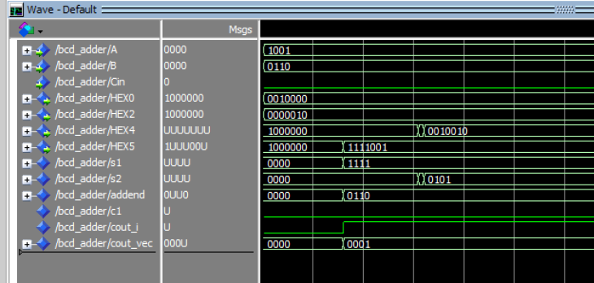

Projects / BCD adder
BCD adder
Digital Circuits and Systems, Lab 8, Oct 2026
A VHDL circuit that adds two decimal digits and shows both digits and their two-digit sum on seven-segment displays. It runs on an Intel MAX 10 FPGA on a DE10-Lite board.
- Inputs
- Two decimal digits, A and B, each as a 4-bit BCD value, and a carry-in
- Outputs
- A and B on their own displays, and the two-digit sum on two more
- Tools
- VHDL, Quartus Prime, ModelSim
Problem
Binary-coded decimal stores each decimal digit in 4 bits. A plain binary add gives the wrong answer once the sum passes 9. For example, 9 + 6 is 1111 in binary, but the display should read 1 and 5.
Design
The circuit adds A, B, and the carry-in as binary numbers. If the result is greater than 9, it adds 6 to correct it, which produces the correct units digit and a carry into the tens digit. Display decoders then turn the digits into seven-segment signals.
Testing
The simulation for 9 + 6 + 0 shows each step. The binary sum is 1111, the correction is 0110, the corrected units digit is 0101, and the tens digit is 0001. The displays show 1 and 5. The result settles in steps instead of all at once, and the waveform shows it. I also programmed the design onto the DE10-Lite and ran it on the board.
